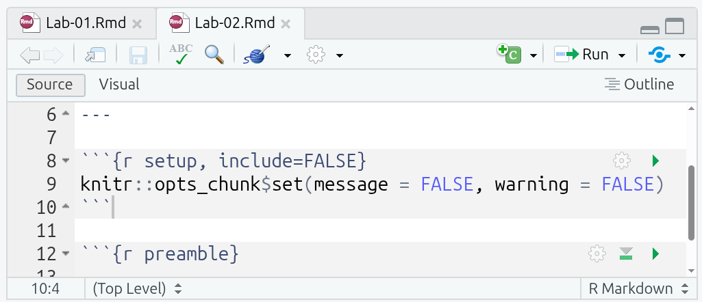
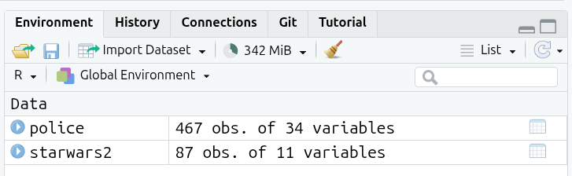

install.packages("tidyverse")Data in R
Welcome back!
In the previous lab, we set up an RStudio session in Posit Cloud and we got familiar with the RStudio environment and the purpose and contents of RStudio’s panes. In this Lab we will learn about R packages, how to install them and load them. We will also use different types of data. You will have the chance to practice with additional R operators. Lastly, we will load a real-world data set and put in practice your new skills.
Overview
By the end of this lab you will know how to:
- install and load packages in R
- download a dataset from a URL and assign it to a named object
- use the pipe (
|>) operator to chain steps - examine, wrangle, and subset a dataset using functions
R Packages
As mentioned in our last lab, R (R Core Team 2021) is a collaborative project. This means that R users are developing, maintaining, and extending the functionalities constantly. When you set up R and RStudio for the first time, as we did last week, it comes only with the ‘basic’ functionalities by default, sometimes referred to as ‘base R’. However, there are literally thousands of extensions that are developed by other users. In R, these non-default extensions are called packages.
Most of the time, we use packages because they simplify our work in R - such as by replacing what would take dozens of lines of complex code in base R with a simple one-line function - or they allow us to extend beyond the capabilities of base R.
Let’s install and load some useful packages. We will start with one of R’s most famous packages, and one we will use across the labs, the tidyverse (Wickham 2021) package.1 First, sign-in to Posit Cloud, create/open your Labs-1-2 project, and then open the Lab-2 R Markdown file.
Open Your Posit Cloud Project
For those who missed Lab 1:
- Make sure you have a free, institutional-subscription Posit Cloud account (in case you have not created one yet, please follow the guidance provided in Lab 1);
- If you enrolled before teaching started, you will have received an email with a link to join your lab group. If you joined the course after the start of teaching, you can find a link in your Lab Group’s forum on Moodle. You tutor will also be able to provide you with a link.
- Follow the rest of the Lab 1 guidance in the ‘Create a New Project’ section.
For those who already joined and created a project in Lab 1, log into Posit Cloud and:
- From the left-hand menu, click “Lab Group ..” where “..” is your lab group number.
- Within the main screen, click “Labs-1-2” to open the Posit Cloud project you created last week.
Open the Lab 2 R Markdown file
You will find your project in the same state as you left it last week. To open a tab for the Lab 2 R Markdown file, click to open ‘Lab-02.Rmd’ in the “Files” tab in the bottom-right pane.
Within Lab 1, you may have noticed the key: value lines between two ---. This is called YAML. YAML is a simple human-readable markup language for data serialization. It consists of what are referred to as key-value pairs. Within R Markdown, a YAML header can be included at the very top and must be fenced with the three hyphens, ---, at start and end.
The R Markdown file for this lab has a couple more lines in the YAML header this time:
title and author are self-explanatory, but make sure to replace [your name here] with your name, making sure to keep the quotation marks around it. Without the quotation marks, you will receive an error message when trying to knit. (Note: Don’t knit your file just yet anyway as it will result in an error message until you complete the sections below.)
date can be any text. However, format(Sys.time(), '%d/%m/%y') is a nice single line of R code that runs when the file is knitted to retrieve the current date and formats it as dd/mm/yyyy, such as 12/09/2025. This then effectively makes the date field “date this file was knitted” and saves you having to manually update it each time.
output specifies what file format(s) to output to when knitting the R Markdown file. Across the labs and assessments we are using ‘html_document’ as it is easiest to work with across the packages we are using in the labs and assessments.
After the YAML header, there is a ‘setup’ code chunk setting knitr options:

This may look intimidating, but it is relatively simple when parsed bit by bit:
-
knitris the package used to knit R Markdown files -
knitr::opts_chunkis an object that stores default settings applied to all code chunks -
knitr::opts_chunk$set(...)runs theset()function to change theknitr::opts_chunkdefault settings
So, what the code in the setup chunk does is set messages and warnings to “FALSE”. This prevents any messages or warnings that get raised when running code chunks from also appearing in any knitted files. (Why we do this will become clear in a bit.)
R Operators
-
::is the namespace operator for accessing an object (such as a function or dataset) from a package, in the formatpackage::object. If you load a package using thelibrary()function, as we will do later, you can call the object directly withoutpackage::. -
$is the component operator for accessing named elements within an object, in the formatobject$component. In data analysis it is often used to access a column (variable) from a data frame. For example, if a data frame nameddfhas a column namedage, you can access it withdf$age.
Into the Tidyverse
- Once you have the Lab 2 R Markdown file open, type the following in the Console (bottom-right pane) and hit ‘Enter’ to run it:
- Wait until you get the message ‘The downloaded source packages are in …’. The install process can take a couple of minutes to finish.
/
- Once the package is installed, you next need to load it using the
library()function. In thepreamblecode chunk already setup in the R Markdown file, add the following in the line under the# Load packagescomment:
- Now run the code chunk. Either by pressing
Ctrl+Shift+Enterwith your text cursor within the code chunk, or by clicking the green triangle in the top-right of the code chunk.
And that’s it, tidyverse is ready to use in your current session!
Note, we run install.packages("package_name") in the Console as we only need to install the package once for each Posit Cloud project. We load packages with library(package_name) in a code chunk at the top of the R Markdown file as packages need to be loaded for every R session. If we ran library(...) in the Console instead of adding it to a code chunk, our packages would not be available in the fresh R session that is created when knitting and would result in an error message.
Another thing to note is that when you install a package, you need to use quotation marks, install.packages("package_name"), whereas when loading a package you just use the package name without quotation marks, library(package_name).
What you may also notice is the message raised in the Console when loading the tidyverse. (If you already ran the setup code chunk you won’t see any text). This is one of the reasons why we have the setup chunk to exclude messages and warnings in knitted files. If we knitted the Lab-02.Rmd file without the setup chunk, the text on loading the tidyverse would also appear in the knitted HTML file after the preamble chunk. We will cover other options you can set to customise what appears in your knitted files in later weeks.

This text often causes users new to R to think an error has occurred. However, it is merely a ‘message’ about conflicts that can be ignored.
The tidyverse is a meta package that bundles a collection of packages together, such as dplyr and ggplot2. These packages share a common design philosophy and are often used together in data analysis. Loading the tidyverse meta package, library(tidyverse), saves us from having to load each of these packages individually with library(dplyr), library(ggplot2), and so on.
What the message is showing then is that each of the core tidyverse packages were loaded OK, and there are conflicts for functions provided by the dplyr package. Two of its functions, filter() and lag(), share the same name as functions in the base R stats package. After loading the tidyverse, any code calling filter() will use the dplyr function with that name rather than the stats ones. (This applies only to filter() directly, the stats function can still be accessed when the tidyverse is loaded by using the :: namespace operator, stats::filter().)
New Terms
-
tidyverse: a collection of R packages that share a consistent design philosophy and work together for importing, wrangling, and visualising data. -
YAML: a human-readable data serialisation language, often used for configuration/settings; in R Markdown the YAML front matter between---sets document metadata and other options.
library() function
Loads an installed package so its functions are available in the R session.
Usage: library(package_name)
Notes:
- A package needs to be installed first using
install.packages("package_name")in the Console. - It is best practice to load packages in a code chunk at the top of R Markdown files.
Types of variables
In quantitative analysis, we often distinguish two main types of variables:
-
Numeric variables have values that describe measurable or countable quantities.
- Continuous variables have values that can fall anywhere within a range, such as time and speed.
- Discrete variables have values that are whole numbers that count something, such as number of children in a household.
-
Categorical variables have values that describe distinct, mutually exclusive categories.
- Nominal variables have categories without any order, such as country, name, political party, and gender.
- Ordinal variables have categories with a meaningful order, such as education level or level of satisfaction.
In R, the most basic data building blocks are atomic vectors. There are six atomic types: logical, integer, double, character, complex, and raw.
In relation to our two main types of variables, we use the following vectors:
-
Numeric vectors (
integerordouble) to store continuous and discrete values. -
Factor vectors (a
classbuilt onintegercodes +characterlabels) to store nominal and ordinal categorical values.
A numeric vector is usually stored as a double internally by default. The difference between integer and double is based on how they are computationally stored. Base R and most R packages handle the difference behind the scenes, so the difference in how they are stored does not matter to us.
A factor is a class combining integer codes and a levels attribute containing the human-readable character labels for those codes. Each stored integer points to a character label in levels, so 1 might correspond to "Conservative", 2 might correspond to "Labour", and so on. For ordered factors, used for ordinal variables, R also records an explicit order of the levels to enable comparisons and sorting by that order.
Two other vectors we commonly use are:
-
Character vectors (
character) to store text, such as unique respondent IDs (“A102”, “C006”) and free-text answers. -
Logical vectors (
logical) to store booleanTRUE/FALSEvalues, useful for filtering and conditions, such asage > 30.
In R, there are couple of functions that will help us to identify the type of data. First, we have glimpse(). This prints some of the main characteristics of a data set, namely its overall dimension, name of each variable (column), the first values for each variable, and the type of the variable. Second we have the function class(), that will help us to determine the overall class(type) of on R object.
From the dplyr package, and loaded with the tidyverse package. Provides a ‘glimpse’ of an object.
Usage: glimpse(x)
Arguments:
-
x- The object (usually a data frame / tibble) to glimpse.
Returns: Prints to the Console. For data frames / tibbles, it shows counts for rows and columns and a compact, transposed preview showing column names, types, and a few example values.
Notes:
- A tibble is just a tidyverse version of base R’s data frames that has some nice extras.
- Shows types such as
<int>(integer),<dbl>(double),<chr>(character),<lgl>(logical),<fct>(factor).
Glimpsing Datasets
We are now going to use some datasets that are available to us in the R session. R comes with some example datasets out of the box, such as iris with 150 observations of iris flowers. Some R packages also include additional example datasets, such as starwars - included in the dplyr tidyverse package - with info about 87 Star Wars characters. Unlike other datasets that we have to manually load, and will cover in later section, we can access these in any R session out the box or after loading the relevant package that provides them.
Please go to the ‘Types of variables’ section in your Lab-02.Rmd file. You will see a few code chunks already setup for you:
- We will start with a classic dataset example in R called
iris. (For more info about the dataset, you can type?irisorhelp(iris)in the Console). Please go to the “iris-glimpse” code chunk in your R Markdown file and run it.
glimpse(iris)Rows: 150
Columns: 5
$ Sepal.Length <dbl> 5.1, 4.9, 4.7, 4.6, 5.0, 5.4, 4.6, 5.0, 4.4, 4.9, 5.4, 4.…
$ Sepal.Width <dbl> 3.5, 3.0, 3.2, 3.1, 3.6, 3.9, 3.4, 3.4, 2.9, 3.1, 3.7, 3.…
$ Petal.Length <dbl> 1.4, 1.4, 1.3, 1.5, 1.4, 1.7, 1.4, 1.5, 1.4, 1.5, 1.5, 1.…
$ Petal.Width <dbl> 0.2, 0.2, 0.2, 0.2, 0.2, 0.4, 0.3, 0.2, 0.2, 0.1, 0.2, 0.…
$ Species <fct> setosa, setosa, setosa, setosa, setosa, setosa, setosa, s…What do you observe from the output?
First, it tells you the number of rows and the columns on the top. After, it lists the name of each variable. Additionally, it tells you the type of the variable between these symbols < >. The first five variables in this dataset are of type <dbl> (double) which as covered above is a type of numeric variable. The last, Species, is a factor <fct>. So, for each of the 150 iris flowers observed, there is information on its species and four types of continuous measures. Though, as glimpse only provides a preview, we only see the values for the first few observations.
- Now you know that each iris flower belongs to a species, but what are the specific categories in this data set? To find out, add the following in the ‘iris-levels’ code chunk and then run it.
levels(iris$Species)(If you receive ‘NULL’ when running the chunk, it because you have species and not Species.)
As you can see, there are three categories, or levels as they are called in R factor variables, which are three types of iris flower species. Notice here we used the $ component operator mentioned earlier. Here it basically means, from the iris data frame select the Species column/variable. levels() is then a nice little utility function that shows all the levels for a column given to it as an argument.
Now, let’s get serious and explore Star Wars.
The starwars data set from the dplyr package contains information about the characters, including height, hair colour, and sex. (Again, to get more information run ?starwars or help(starwars) in the Console). For the purpose of keeping things relatively simple to focus on variable types, we will use a reduced version of the full data set.
- First, run the ‘starwars-glimpse’ code chunk to create a reduced version of the data set named
starwars2and then glimpse the Star Wars characters in that reduced data set:
starwars2 <- starwars[, 1:11]
glimpse(starwars2)Note, creating a reduced version uses another selection operator available with tibbles - the tidyverse’s version of an R data frame. The basic format is dataset[rows, columns]. Here starwars[, 1:11] leaves rows blank, which effectively means select all rows, and columns has 1:11, which means select columns 1 to 11. So, the code returns all rows but only the first 11 columns.
What do you observe this time?
It seems that the data type is not consistent with their content. For example, the variables species, gender, and hair_color are of type <chr> (that is character), when according to what we covered above these should be factors. To transform them, we will use the function ´factor()´. This process is known as coercing a variable, that is when you change a variable from one type to another. factor() is another nice little helper function
- Let’s coerce the species variable from character to factor and assign the result to the same column in the dataset. Add the following to the ‘starwars-factor’ code chunk and run it.
starwars2$species <- factor(starwars2$species)Note, most objects in R are what is known as immutable, meaning any changes to them requires explicit assignment back to the object. If you run factor(starwars2$species on its own, it will return all the values for species and the levels created. However, for the species column to be updated with the results returned by factor(starwars2$species) we need the starwars2$species <- ... assignment as well.
- Let’s check if the type of variable really changed by glimpsing the data and checking the levels of
species. Added the following to the ‘starwars-glimpse2’ chunk and run it.
The glimpse result now is telling us that species is a <fct>, as expected. Furthermore, the levels() function reveals that there are 37 types of species, including Human, Ewok, Droid, and more.
Hopefully, these examples will help you to identify the main vector types and, more importantly, an initial understanding of how to coerce them into an appropriate type. Be aware that many data sets represent categories with numeric values without the labels, for example, using ‘0’ for male and ‘1’ for female. Usually, large data sets are accompanied by extra information in a code book or documentation file, which specifies the values for the numeric code and their respective meaning. It’s important to read the code book/documentation of every data set as the conventions and meanings can vary. For example, some surveys now put gender in alphabetical order, with 0 for female and 1 for male.
Pipes
A useful operator is the pipe |>. This is the base R version of the pipe. This operator is what is known in programming as syntactic sugar. It is syntax which helps make code easier to read and write without changing any functionality. The pipe operator passes the result of one function as the first argument to the next (left to right).
Run the ‘pipe-1’ code chunk and check its results.
The sum() function adds the value of two numbers in format sum(x, y). Using a pipe for 1 |> sum(1) is the equivalent to sum(1, 1). So for line one it is equivalent of ‘take 1, then add it with 1’ and line 2 ‘take 1, then add it with 1, then add it with 5’.
This may seem as if it is overcomplicating things, but as the code becomes more complex the value of the pipe operator becomes clearer. The second line, 1 |> sum(1) |> sum(5) would be written as sum(sum(1,1), 5) without pipes. Going left to right, 1 |> sum(1) would be sum(1,1) and then sum(1,1) |> sum(5) would be sum(sum(1,1), 5). Pipes then help us avoid function(function(function(...), ...) ...) monstrosities in our code.
Note, in the readings and other materials, you may come across another %>% pipe. This pipe comes from the tidyverse. The tidyverse pipe came before the base R one, where due to its popularity an equivalent was added to base R. Whilst you will still see it in use, and it remains supported in the tidyverse, the tidyverse itself recommends people start using the base R |> pipe. To see that they work the same, run the ‘pipe-2’ chunk.
Black lives matter!
In this section we will work with data originally collected by The Guardian in 2015, for more information click here. The data set we will use today is an extended version which was openly shared in GitHub by the American news website FiveThirtyEight. This data set contains information about the people that were killed by police or other law enforcement bodies in the US, such as age, gender, race/ethnicity, etc. Additionally, it includes information about the city or region where the event happened. For more information click here.
Downloading and reading the data
As with installing packages, we only want to download the data once. For this lab, we will download the data running code in the Console. Next week though, we will go through how to set up an R script for downloading data. This is a common strategy for sharing the code used to download data whilst still keeping it separate to your main R Markdown file.
First, we will create a new folder in our project directory to store the data. To do it from the Console, run this line. (Don’t worry if you get a warning. This appears because you already have a folder with this name):
dir.create("data")Note that in the ‘Files’ tab of Pane 4, the bottom-right pane, there is a new folder called data.
Now, download the data from the GitHub repository using the function download.file(). This function takes two arguments separated by a comma: (1) the URL and (2) the destination (including the directory, file name, and file extension), as shown below.
Copy and paste the following lines into the Console:
download.file("https://github.com/fivethirtyeight/data/raw/master/police-killings/police_killings.csv", "data/police_killings.csv")(Note, to avoid any issues typing out the URL, you can click the clipboard icon in the top-right of the code above to copy the full contents to your clipboard.)
After that, we are ready to read the data. As the data comes as a .csv file, we can use the read_csv() function included in the tidyverse package (make sure you the package is loaded in your session as explained in a previous section).
We will assign the data in an object called police. Importantly, as with loading packages, when loading data it is good practice to do so at the top of the file. So, go all the way back up to the preamable code chunk and add the following line after the ‘# Read data’ comment.
police <- read_csv("data/police_killings.csv")You should now have:
Run the code chunk and you’ll know it has run OK if can see ‘police’ in your Global Environment in the top-right pane. It will have 467 observations and 34 variables (columns).

Creating code chunks
OK, before we look at this police data, a reminder about creating code chunks. Scroll back in your R Markdown file to “## Black lives matter!”. For this section, you will need to create your own code chunks.
To create a new code chunk, you have four options:
- Put your text cursor on a line in your R Markdown file and press
Ctrl+Alt+Ion the keyboard. - From the menu bar at the top of RStudio, you can select
Code > Insert Chunk. - Manually type three backticks, on UK layout keyboards the key to the left of the 1 key, and then
{r}(remember to add three backticks on a line below to close the code chunk as well). - Click on the icon that is a c in green square with a ‘+’ in a circle in top-left corner, and then click on R to create an R code chunk.
By default, a new code chunk will be plain {r}, but you can edit this to give it an optional name:
Glimpsing the data
Back to the data. Let’s first glimpse the police data. Create a code chunk then add and run the following:
glimpse(police)As you can see, there are several variables included in the dataset, such as age, gender, law enforcement agency (lawenforcementagency), or whether the victim was armed (armed). You will see some of these variables are not in the appropriate type. For instance, some are categorical and should be a factor (<fct>) instead of character (<chr>).
Data wrangling
Before coercing these variables, we will create a smaller subset selecting only the variables that we are interested in. To do so, we can use the select() function. The select() function takes the name of the data first and then the name of the variables we want to keep (no quotation marks needed). We will select a few variables and assign the result to a new object called police_2.
police_2 <- select(police, age, gender, raceethnicity, lawenforcementagency, armed)Note, select() is another function from the dplyr tidyverse package. Many tidyverse functions that take a data frame as the first argument, select(first_argument, ...)``, will assume all variables listed after are from that data frame. Within the function, this then let's us typeageandgenderrather thanpolice\(age` and `police\)gender`.
If you look again to the ‘Environment’ tab, there is now a second data set with the same number of observations but only 5 variables. Create a new code chunk, then add and run the following code to glimpse its contents.
glimpse(police_2)Having a closer look at the reduced version, we can see that in fact all the variables are of type <chr> (character), including age.
Let’s coerce the variables in to their correct type. Start by creating a code chunk and naming it ‘coerce-police_2’ or similar.
Then within the chunk, let’s start with age, coercing it from character to numeric by adding the following lines:
# Coerce numeric
police_2 <- police_2 |> mutate(age = as.numeric(age))The # Coerce numeric line let’s us add a comment to our code. Any R code after a # is treated as a comment and is not run as part of the code. This is useful for recording the ‘why’ behind the code, so future-you (and others) can quickly read and understand it.
(You may be wondering why outside the code chunks there are # but these become headers when knitting the document. The reason is within Markdown syntax # is used for Headings, and Heading level - # for Heading 1, ## for Heading 2, and so on. Unfortunately, as R and Markdown developed separately before the creation of R Markdown bringing them together, they both had by that point decided to use # for different things. Whilst confusing at first, it all boils down to inside chunk = comments, outside chunk = header. The reason for ## Heading 2 for all the headings in the R Markdown template for this lab is because Heading 1 is already used for the title - the title: "..." in the YAML header.)
Age is not known for some cases. Thus, it is recorded as ‘Unknown’ in the dataset. Since this is not recognized as a numeric value in the coercion process, R automatically sets it as a missing value, NA. This is why it will give you a warning message. (You will not see a warning message if you ran the knitr setup chunk that disabled warning messages.)
We can continue coercing raceethnicity and gender from character to a factor by adding the following lines to our chunk:
Run the chunk and then create and run a new chunk with the following to glimpse the data frame again:
glimpse(police_2)You should hopefully now see the three coerced variables now have the correct types:
-
ageas numeric<dbl> -
genderandraceethnicityas factor<fct>
Now, let’s run a summary of your data. This shows the number of observations in each category or a summary of a numeric variable. Create a code chunk, then add and run the following:
summary(police_2)There are some interesting figures coming out from the summary. For instance, in age you can see that the youngest (Min.) is… 16 years old(?!), and the oldest (Max.) 87 years old. Also, the vast majority are male (445 vs 22). In relation to race/ethnicity, roughly half are ‘White’, whereas ‘Black’ individuals represent an important share. One may question the proportion of people killed in terms of race/ethnicity compared to the composition of the total population (considering Black is a minority group in the US).
Let’s suppose that we only want observations in which race/ethnicity is not unknown. To ‘remove’ undesired observation we can use the filter() function. Remember, to make changes to an object we need to assign the result of a function back to it. We will then need to assign the result of filter back to the police_2 object.
Create a chunk, then add and run the following:
police_2 <- police_2 |> filter(raceethnicity != "Unknown")So, what just happened in the code above? First, the pipe operator, |>: What we are doing verbally is take the object police_2, THEN filter raceethnicity based on a condition.
Then, what is happening inside the filter() function? Let’s have a look at what R does in the background for us (Artwork by @alison_horst):

Note, df for us is police_2. Since we are using the pipe operator, police_2 |> filter(raceethnicity != "Unkown") is equivalent to writing filter(police_2, raceethnicity != "Unkown") without the pipe operator.
In our example then, we are keeping the observations in raceethnicity that are NOT EQUAL (!=) to ‘Unknown’. When we then assign the result to an object named the same as our existing object, we replace the old dataset with the new filtered version.
Finally then, create another code chunk to get a glimpse and summary of the data frame again:
glimpse(police_2)Rows: 452
Columns: 5
$ age <dbl> 16, 27, 26, 25, 29, 29, 22, 35, 44, 31, 76, 40, N…
$ gender <fct> Male, Male, Male, Male, Male, Male, Male, Male, M…
$ raceethnicity <fct> Black, White, White, Hispanic/Latino, White, Whit…
$ lawenforcementagency <chr> "Millbrook Police Department", "Rapides Parish Sh…
$ armed <chr> "No", "No", "No", "Firearm", "No", "No", "Firearm…summary(police_2) age gender raceethnicity lawenforcementagency
Min. :16.00 Female: 20 Asian/Pacific Islander: 10 Length:452
1st Qu.:28.00 Male :432 Black :135 Class :character
Median :35.00 Hispanic/Latino : 67 Mode :character
Mean :37.15 Native American : 4
3rd Qu.:45.00 Unknown : 0
Max. :87.00 White :236
NA's :2
armed
Length:452
Class :character
Mode :character
To make it easier to compare, the results from this code are included here as well. Within your R Markdown file, scroll up to your previous glimpse and summary chunks for the police_2. You should see that under raceethnicity, ‘Unkown’ is now 0 instead, when it was 15 before we filtered the dataset. Correspondingly, the total number of rows has dropped by 15, going from 467 initially, to 452 after filtering.
Activities
Discuss the following questions with your neighbour or tutor:
- What is the main purpose of the functions
select()andfilter? - What does coerce mean in the context of
R? and Why do we need to coerce some variables? - What is the
mutate()function useful for?
Using the police_2 dataset:
- Filter how many observations are ‘White’ in
raceethnicity? How may rows/observations are left? - How many ‘Hispanic/Latino’ are there in the dataset?
- Using the example of Figure 2.3, could you filter how many were killed that were (a) ‘Black’ and (b) killed by firearm (‘firearm’)?
- What about ‘White’ and ‘firearm’?
Extra activities:
- Why did you have to use quotes in the following:
filter(police, raceethnicity==”White” & raceethnicity==”firearm”)? - What do you have to repeat the variable
raceethnicitytwice?
This is the end of Lab 2. Again, the changes in your R Markdown file should be saved automatically in RStudio. However, make sure this is the case as covered in Lab 1. After this, you can close the tab in your web browser. Hope you had fun!
References
Horst, Alison. n.d. “GitHub - Allisonhorst/Stats-Illustrations: R & Stats Illustrations by @Allison_horst.” Accessed July 11, 2022. https://github.com/allisonhorst/stats-illustrations.
R Core Team. 2021. R: A Language and Environment for Statistical Computing. Vienna, Austria: R Foundation for Statistical Computing. https://www.R-project.org/.
Wickham, Hadley. 2021. Tidyverse: Easily Install and Load the Tidyverse. https://CRAN.R-project.org/package=tidyverse.